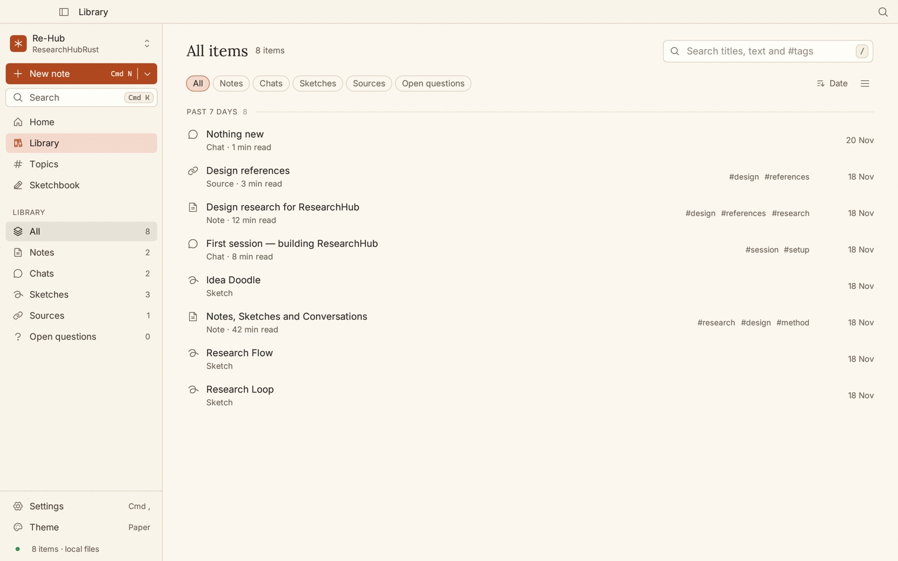
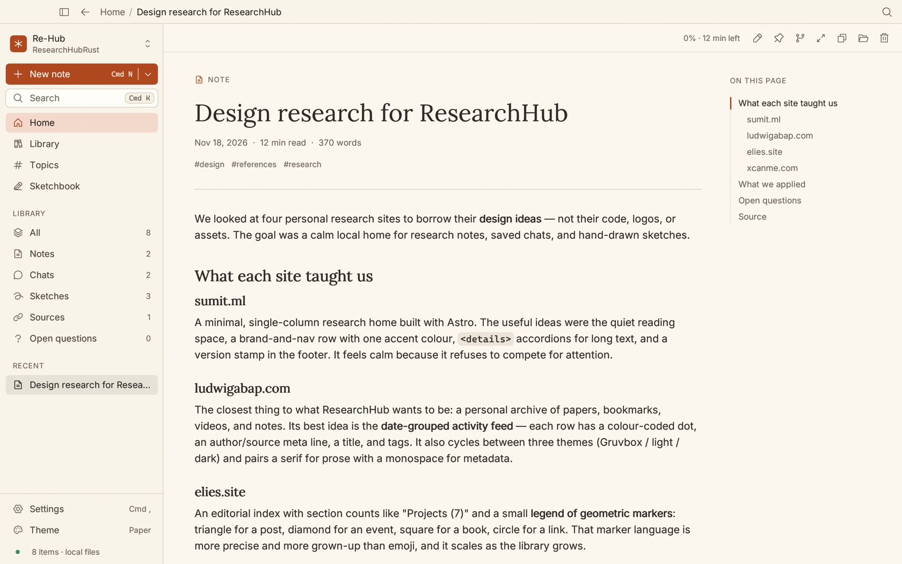
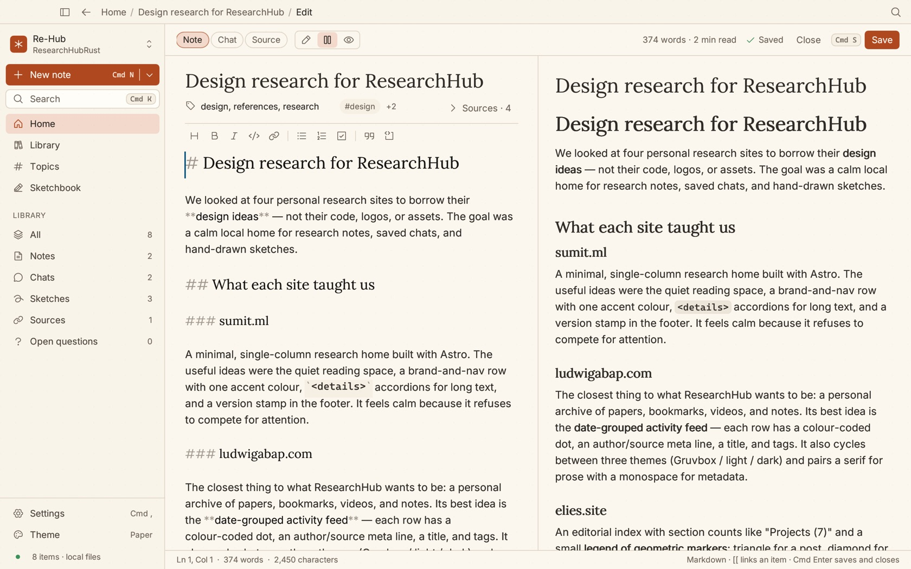
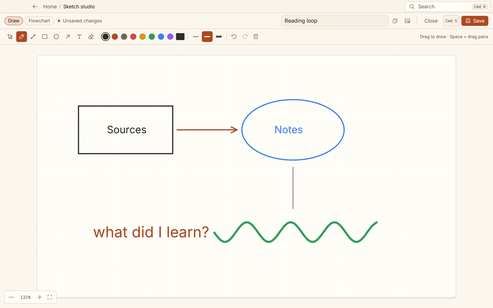
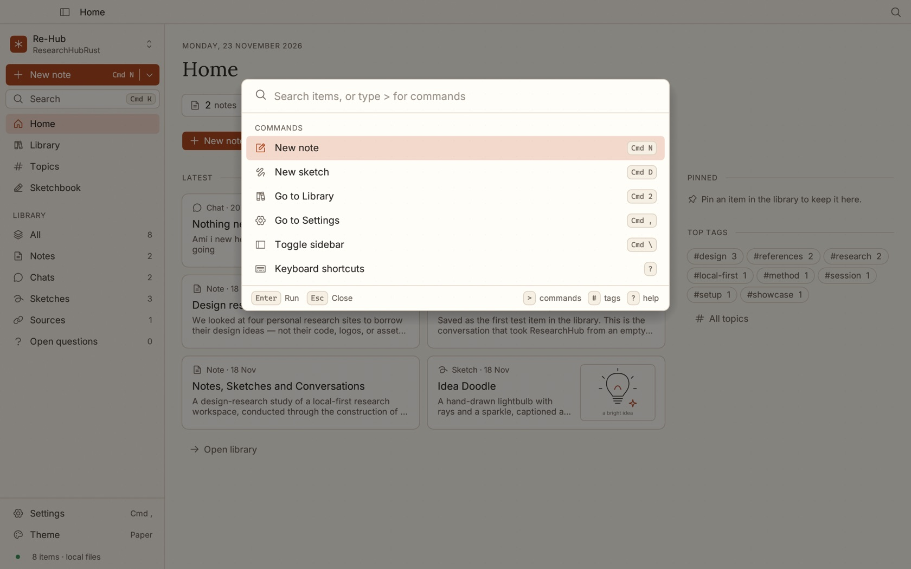
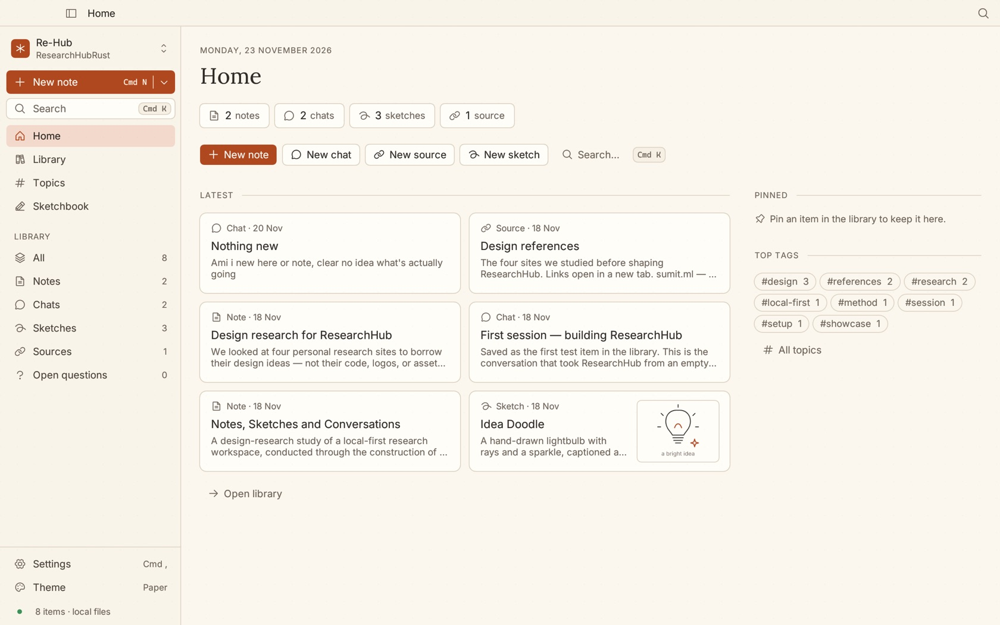
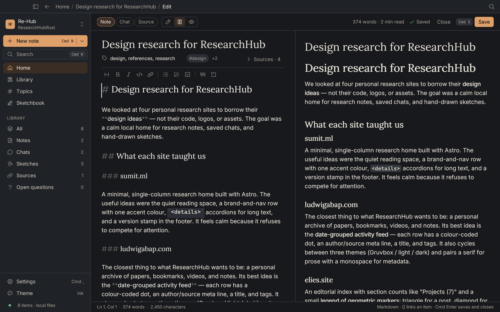
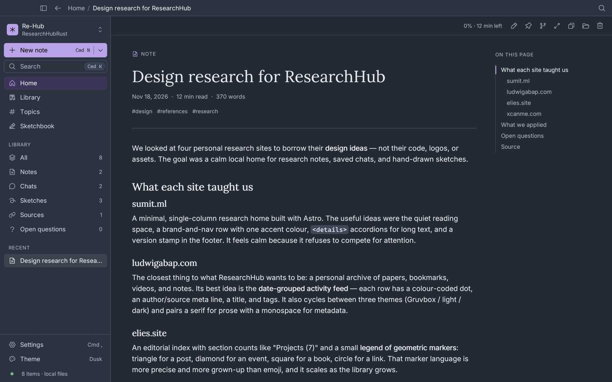
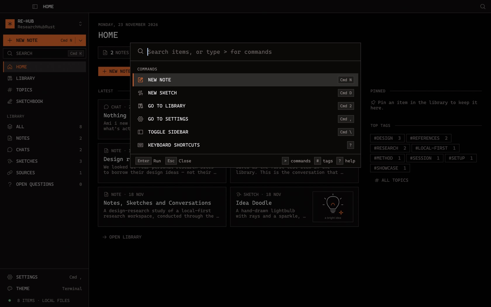

Desktop app / v0.2.1
Research that stays in your folder.
Collect sources, link notes and sketch ideas in a keyboard-first desktop workspace. Your library is an ordinary folder of Markdown and SVG files.

-
Collect
- Sources and notes
- Saved chats and sketches
-
Connect
- Wiki-links and backlinks
- Investigation threads
-
Hand off
- Markdown thread export
- CLI and MCP access
Shortcuts from the app · Cmd on macOS, Ctrl on Windows and Linux
- Cmd/CtrlK Command palette
- Cmd/CtrlN New note
- Cmd/CtrlD New sketch
- / Focus search
Workflow
From a loose source to a finished argument, in one window




Features
Built for the long middle of a research project
Small, specific tools for finding what you saved, reading it closely and writing it up. Nothing here needs an account or a server.
-
FindKeyboard
Command palette
Fuzzy search over items and commands. Type
>for commands or#for tags.Cmd/CtrlK
-
Find
Search with operators
Words,
"exact phrases",#tag,type:sourceandis:pinned, across titles, text and tags./ focuses search
-
ReadLinks
Wiki-links and backlinks
Link items with
[[Title]]. Each page lists what links back to it, so a claim leads to its source.Resolves by title, then filename
-
ReadExport
Investigation threads
Open any item with everything it links to as one readable document, then export that thread as Markdown.
Saved to
exports/ -
Track
Open questions
A library filter that lists every item with unfinished task-list entries, so loose ends stay visible.
Sidebar filter with a count
-
CiteSources
Sources keep references
A source item stores its URL and key points. Notes, chats and sources share one format.
Frontmatter field
sources

Plain files
A library is just a folder
No database and no proprietary format. Files stay readable without the app, in any editor, sync tool or version control system you already use.
Your folder
The default is Documents/ResearchHub. Point the app at any other folder.
ResearchHub/
├── notes/ *.md
├── chats/ *.md
├── sources/ *.md
├── diagrams/ *.svg
├── exports/ *.md
└── .trash/What the app promises about your files
The same rules apply in the desktop app, the CLI and the MCP server.
Atomic writes
Each save writes a temporary file, then renames it.
Unknown fields kept
Frontmatter keys the app does not know are preserved on edit.
Live reload
Change a file in another editor and the library picks it up.
Trash, not delete
Deleting moves an item to .trash inside the library.
Readable frontmatter
One key: value per line: title, date, type, tags.
Nothing in between
No account, no server, no browser engine, no database.
Works withany text editoryour sync toolGit or other version control
Agent interface
Three ways in, one folder
The binary that opens the window also runs headless. Items written by the CLI or the MCP server are indistinguishable from items made in the app.
-
Desktop app
Native Rust with egui. Run it with no arguments.
-
Command line
Search, read, create, update, pin, trash, restore and export. Add
--jsonfor scripts. -
MCP server
researchhub mcpexposes the data layer to coding agents over stdio.
# search the library
$ researchhub search "open access" type:source --json
# save a source with its URL
$ researchhub create --type source --title "Survey notes" \
--url https://example.org/paper --tags method,survey
# one item plus everything it links to
$ researchhub export notes/2026-01-01-topic.md
# give a coding agent the same library
$ researchhub mcp- rh_search
- rh_list
- rh_read
- rh_create
- rh_update
- rh_pin
- rh_trash
- rh_restore
- rh_export
- rh_refresh
- rh_stats
Themes
Four themes, one design system
Paper is light. Ink and Dusk are dark. Terminal is near-black, monospaced and square. Interface zoom is on Cmd/Ctrl= and -.
-

Paper
Light, warm, serif headings.
-

Ink
Dark. Shown here in the editor.
-

Dusk
Dark. Shown here in the reader.
-

Terminal
Near-black, monospaced, square.
Release status
Early, and honest about it
Re-Hub is at version 0.2.1. Public downloads are not open yet. This is what has been built and what has been checked.
| Platform | State |
|---|---|
| macOS 11+, Apple silicon | Daily use Developed and tested here. |
| macOS, Intel | Built Part of the universal build. Not tested on real Intel hardware. |
| Windows 10/11 | CI only Installer built and smoke-tested in CI. Not yet used day-to-day on a real desktop. |
| Linux, X11 and Wayland | CI only .deb and AppImage built and smoke-tested in CI. Not yet used day-to-day on a real desktop. |
- Downloads Not public yet. There is no download link on this page on purpose.
- macOS builds Not notarised.
- Licence Not chosen yet.
- Not planned Accounts, cloud sync, collaboration, a database, a plugin system.
Keep the thinking. Keep the files.
Read a note with its linked sources, then export the investigation thread as Markdown. Keep the sketch alongside it as SVG.